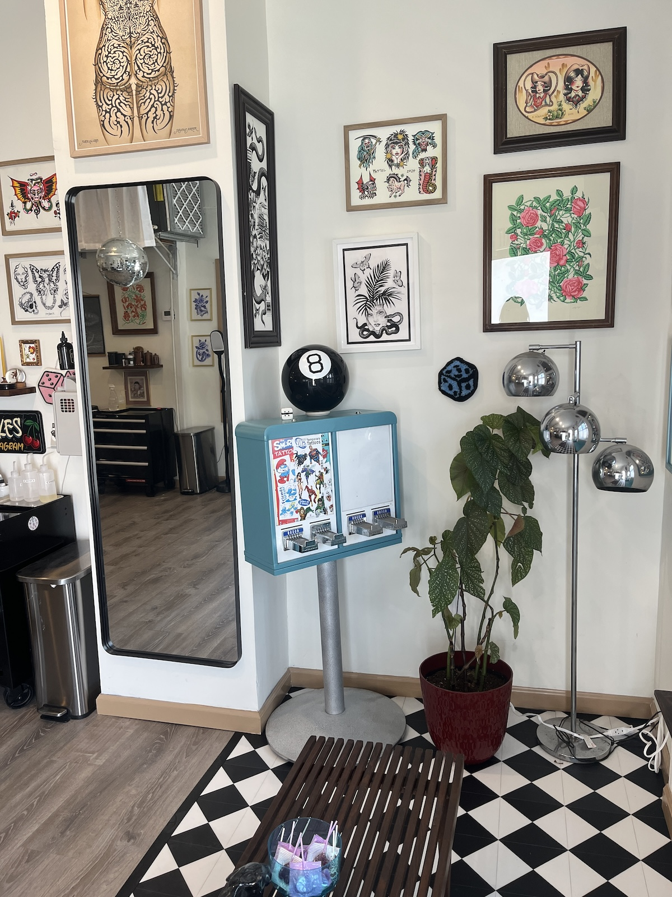
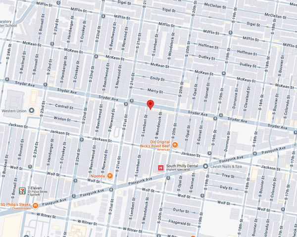

THE STUDIO
NO DICE TATTOO WAS FOUNDED IN 2025 BY PHILADELPHIA ARTIST CECE POKES AS A SPACE FOR NURTURING AND ELEVATING HIGH-END TATTOO ARTISTS FROM PHILLY AND BEYOND.

LOCATION
We're LOCATED AT 2101 S. Lambert Street, Philadelphia, PA

Free street parking can be found in the neighborhood. Generally, the most parking available is on Jackson st, and Snyder Ave. Please note that street parking east of 20th st is 2-hr parking. We recommend looking for parking between 20th and 22nd st and accounting for the time it may take to park and walk over.
F.A.Q.
LEARN MORE ABOUT OUR BOOKING, WALK-INS, PRICING, AND OTHER POLICIES ON OUR FAQ PAGE.
VISIT F.A.Q.
2101 S. Lambert Street, Philadelphia
WELCOME TO YOUR
FRIENDLY CORNER
TATTOO SHOP.
FRIENDLY CORNER
TATTOO SHOP.